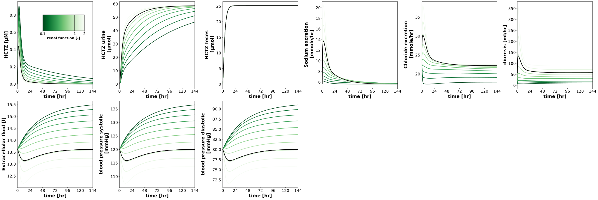
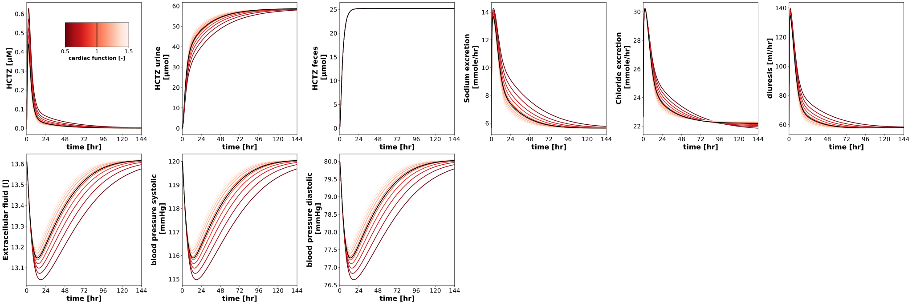
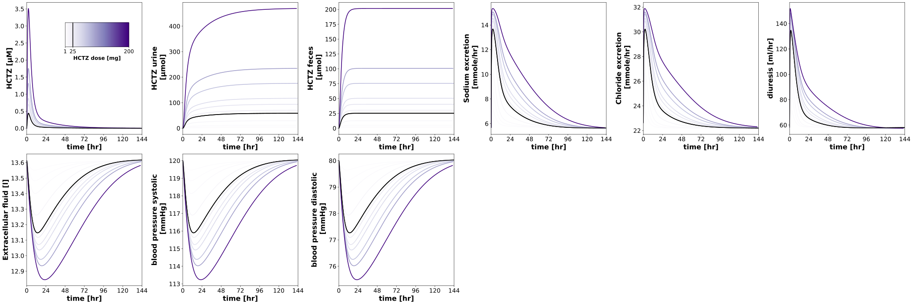
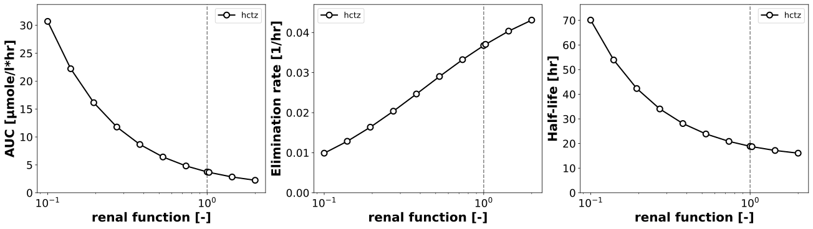
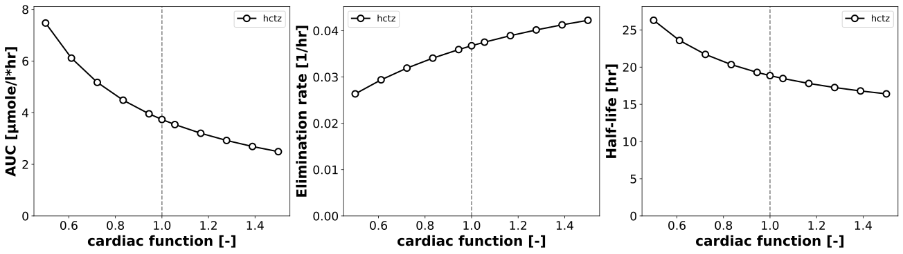
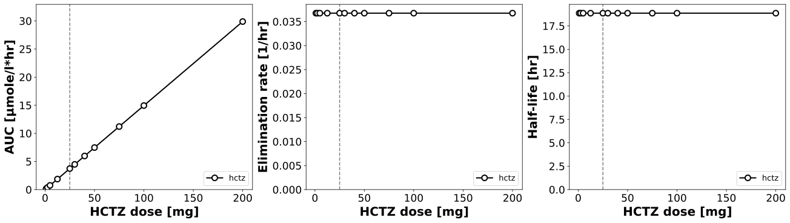
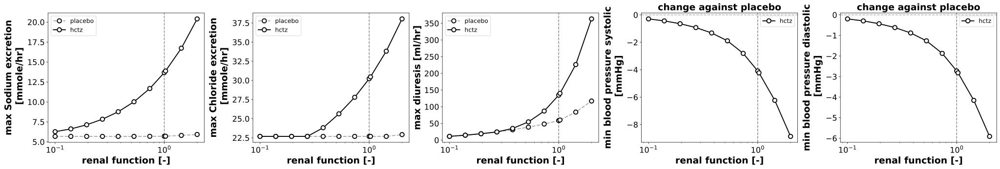
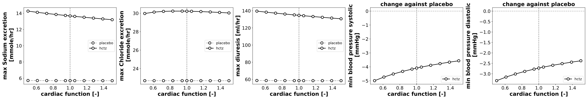
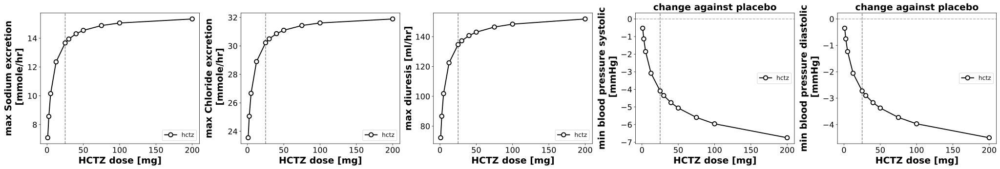

Overview
Models
| model | source |
|---|---|
| model | hctz_body_flat.xml |
Datasets
The experiment has no datasets.
Figures (9)


















Code
"""Parameter scans hydrochlorothiazide."""
from typing import Any, ClassVar, TypedDict, override
import matplotlib.axes
import matplotlib.cm as cm
import matplotlib.pyplot as plt
import numpy as np
import pandas as pd
from matplotlib.typing import ColorType
from pkpdsim.scan import point_band, point_timecourse, scan_dimensions
from sbmlsim import Q
from sbmlsim.plot.serialization_matplotlib import (
FigureMPL,
)
from sbmlsim.result import ScanResult
from sbmlsim.simulation import (
Dimension,
Scan,
Simulation,
)
from sbmlsim.units import Quantity
from pkdb_models.models.hctz import MODEL
from pkdb_models.models.hctz.experiments.base_experiment import (
HCTZSimulationExperiment,
)
from pkdb_models.models.hctz.hctz_pk import summarize
class ScanSpec(TypedDict):
"""Definition of a single parameter scan."""
parameter: str
default: float
range: np.ndarray
scale: str
colormap: str
units: str
label: str
class HCTZParameterScan(HCTZSimulationExperiment):
"""Scan the effect of parameters on pharmacokinetics.
In a run over the draws of the fitted parameters (`run_simulation
pkdb_models.models.hctz --uncertainty`) every point of a scan is simulated
for every draw; the figures draw the median of the draws with the band of
their quantiles, the timecourses per point of the scan and the
pharmacokinetic and pharmacodynamic parameters over the scanned parameter.
"""
font: ClassVar[dict[str, Any]] = {"weight": "bold", "size": 20}
tick_font_size = 17
# the renal scan down to 0.1 eliminates within the horizon: the terminal
# half-life at renal function 0.1 is 98 hr (20 hr at 1), at 240 hr 12 % of
# the dose is still in the body and 17 % of the AUC extrapolated, at 720 hr
# 0.4 % and 0.6 %
tend = 720
steps = 15000
#: the output times of a run over the draws [hr]: every 0.02 hr in the
#: first day (absorption and maximum), every 0.5 hr after it. The grid of
#: 15000 steps over 720 hr for every draw of every point would need about
#: 30 GB. The AUC and Cmax of the two grids differ by less than 0.01 %, the
#: half-life by less than 1 % (the NCA chooses other points of the
#: terminal phase), see test_hctz
times_uncertainty: ClassVar[tuple[float, ...]] = tuple(
np.unique(
np.concatenate([np.linspace(0, 24, 1201), np.linspace(24, 720, 1393)])
).tolist()
)
#: the variables of the figures and of the pharmacokinetic parameters
selections = (
"time",
"[Cve_hctz]",
"Aurine_hctz",
"Afeces_hctz",
"NA_EXCRETION",
"CL_EXCRETION",
"diuresis",
"ECF",
"bp_systolic",
"bp_diastolic",
"PODOSE_hctz",
"f_renal_function",
"f_cirrhosis",
"f_cardiac_function",
)
#: the oral doses of the scans [mg]: a placebo and 25 mg
doses_hctz: ClassVar[dict[str, int]] = {"placebo": 0, "hctz25": 25}
#: the blood pressures, whose effect is the change against the matched
#: placebo: without HCTZ the pressure is not stationary in impaired renal
#: function (it rises from 120 to 141 mmHg in 14 days at a renal function
#: of 0.19), so that its minimum over the time would be the pressure at
#: the start and not depend on HCTZ
bp_effects: ClassVar[tuple[str, ...]] = ("bp_systolic", "bp_diastolic")
num_points = 10
#: the opacity of the bands of the draws of the fitted parameters
band_alpha = 0.15
scan_map: ClassVar[dict[str, ScanSpec]] = {
"renal_scan": {
"parameter": "f_renal_function",
# "range": np.linspace(0.1, 1.9, num=num_points),
"default": 1.0,
# 0.1 to 2 of the supported renal function 0.05 to 2
# (`renal_function_range`), a GFR of 10 to 202 ml/min; at 2 the GFR
# is 0.15 of the renal blood flow (0.28 of the renal plasma flow
# with a hematocrit of 0.45)
"range": np.sort(
np.append(np.logspace(-1, np.log10(2), num=num_points), [1.0])
),
"scale": "log",
"colormap": "Greens_r",
"units": "dimensionless",
"label": "renal function [-]",
},
# no scan of cirrhosis: HCTZ has no hepatic clearance and cirrhosis
# changes only the shunts and the liver tissue (the AUC by 0.03 % at
# f_cirrhosis 0.9), the scan predicted no change by construction
"cardiac_scan": {
"parameter": "f_cardiac_function",
# "range": np.linspace(0.1, 1.9, num=num_points),
"default": 1.0,
"range": np.sort(
# np.append(np.logspace(-1, 1, num=num_points), [1.0])
np.append(np.linspace(0.5, 1.5, num=num_points), [1.0])
), # [10^-1=0.1, 10^1=10]
"scale": "linear",
"colormap": "Reds_r",
"units": "dimensionless",
"label": "cardiac function [-]",
},
"dose_scan": {
"parameter": "PODOSE_hctz",
"default": 25,
"range": np.sort(
# np.append(np.linspace(1, 100, num=num_points), [10])
[1, 2.5, 5, 12.5, 25, 30, 40, 50, 75, 100, 200]
), # [10^-1=0.1, 10^1=10]
# "range": np.sort(
# np.append(np.logspace(1, 2, num=num_points), [50])
# ), # [10^-1=0.1, 10^1=10]
"scale": "linear",
"colormap": "Purples",
"units": "mg",
"label": "hydrochlorothiazide dose [mg]",
},
}
def scan_id(self, scan_key: str, dose_key: str = "hctz25") -> str:
"""Get the id of the simulation of a scan with a dose.
The dose scan scans the dose, it is one simulation `scan_hctz_dose_scan`
whatever the dose.
"""
if self.scan_map[scan_key]["parameter"] == "PODOSE_hctz":
return f"scan_hctz_{scan_key}"
return f"scan_{dose_key}_{scan_key}"
@override
def simulations(self) -> dict[str, Scan]:
scans = {}
for dose_key, dose_hctz in self.doses_hctz.items():
for scan_key, scan_data in self.scan_map.items():
sim_key = self.scan_id(scan_key, dose_key)
if sim_key in scans:
continue
# the simulation does not set what the dimension scans (the
# dose of the dose scan), the dimension would replace it
preinit_changes = {
**self.default_changes(),
"PODOSE_hctz": Q(dose_hctz, "mg"),
}
preinit_changes.pop(scan_data["parameter"], None)
grid: dict[str, Any] = (
{"steps": self.steps}
if self.uncertainty is None
else {"times": self.times_uncertainty}
)
scans[sim_key] = Scan(
simulation=Simulation(
time_unit="hr",
end=self.tend,
preinit_changes=preinit_changes,
**grid,
),
dimensions=[
Dimension(
"dim_scan",
values={
scan_data["parameter"]: Q(
scan_data["range"], scan_data["units"]
)
},
),
],
)
return scans
def _across(self) -> str | None:
"""Get the dimension of the draws of the fitted parameters, `None` without."""
return None if self.uncertainty is None else self.uncertainty.id
def _scan_dimension(self, res: ScanResult) -> str:
"""Get the dimension of the scan, without the draws."""
(dim,) = scan_dimensions(res, self._across())
return dim
def _scanned(self, res: ScanResult, parameter_id: str) -> Quantity:
"""Get the values of the scanned parameter at the points of the scan."""
values = res[parameter_id].isel(time=0)
across = self._across()
if across is not None:
values = values.isel({across: 0})
return Q(values.values, res.units[parameter_id])
def _timecourse(
self,
ax: matplotlib.axes.Axes,
res: ScanResult,
sid: str,
point: dict[str, int],
color: ColorType,
) -> tuple[Quantity, Quantity]:
"""Get the timecourse of a point of a scan, drawing the band of its draws.
Returns:
The time and the values, the median of the draws in a run over
them.
"""
run = self.uncertainty
if run is None:
time, values = point_timecourse(res, sid, **point)
else:
time, lower, values, upper = point_band(
res, sid, across=run.id, quantiles=run.quantiles, **point
)
ax.fill_between(
Q(time, res.units["time"]).to(self.units["time"]).magnitude,
Q(lower, res.units[sid]).to(self.units[sid]).magnitude,
Q(upper, res.units[sid]).to(self.units[sid]).magnitude,
color=color,
alpha=self.band_alpha,
linewidth=0,
)
return (
Q(time, res.units["time"]).to(self.units["time"]),
Q(values, res.units[sid]).to(self.units[sid]),
)
def _summary(
self, df: pd.DataFrame, key: str, unit: str, target: str
) -> tuple[Quantity, Quantity | None, Quantity | None]:
"""Get a parameter at the points of a scan, the median and the band of the draws.
Returns:
The values (the median of the draws in a run over them), and the
lower and the upper quantile, `None` without draws.
"""
run = self.uncertainty
if run is None:
return Q(df[key].to_numpy(dtype=float), unit).to(target), None, None
summary = summarize(df, key, run.quantiles)
return tuple( # ty: ignore[invalid-return-type]
Q(summary[column].to_numpy(), unit).to(target)
for column in ["median", "lower", "upper"]
)
def _placebo(self, scan_key: str) -> tuple[ScanResult, int | None]:
"""Get the untreated simulation matched to the points of a scan.
A scan with a placebo has it at the same points. The dose scan has
none, its points are the healthy state of the model: its placebo is
the point of the default renal function of the placebo of the renal
scan, whose other changes are those of the dose scan.
Returns:
The result of the placebo and the position of its point along the
dimension of its scan, `None` for the points of the scan.
"""
if self.scan_id(scan_key, "placebo") != self.scan_id(scan_key):
return self.results[f"task_{self.scan_id(scan_key, 'placebo')}"], None
renal = self.scan_map["renal_scan"]
res = self.results[f"task_{self.scan_id('renal_scan', 'placebo')}"]
values = self._scanned(res, renal["parameter"]).magnitude
(index,) = np.flatnonzero(np.isclose(values, renal["default"]))
return res, int(index)
def _bp_change(self, scan_key: str, sid: str) -> pd.DataFrame:
"""Get the largest decrease of a blood pressure against the matched placebo.
The minimum over the time of the pressure with 25 mg HCTZ minus the
pressure without, at every point of the scan and every draw of the
fitted parameters (a run over the draws has the same draws in every
scan).
Returns:
One row per simulation with its position (`point`, and `draw` with
draws), the change `min` and its unit.
"""
res = self.results[f"task_{self.scan_id(scan_key)}"]
placebo, placebo_point = self._placebo(scan_key)
across = self._across()
dim = self._scan_dimension(res)
(placebo_dim,) = scan_dimensions(placebo, across)
draws: list[int | None] = (
[None] if across is None else list(range(res.ds.sizes[across]))
)
rows = []
for point in range(res.ds.sizes[dim]):
for draw in draws:
at = {} if across is None or draw is None else {across: draw}
time, values = point_timecourse(res, sid, **{dim: point}, **at)
time_placebo, values_placebo = point_timecourse(
placebo,
sid,
**{placebo_dim: point if placebo_point is None else placebo_point},
**at,
)
untreated = np.interp(time, time_placebo, values_placebo)
rows.append(
{
"point": point,
**({} if draw is None else {"draw": draw}),
"sid": sid,
"min": float(np.min(values - untreated)),
"unit": str(res.units[sid]),
}
)
return pd.DataFrame(rows)
@override
def figures_mpl(self) -> dict[str, FigureMPL]:
"""Matplotlib figures."""
# calculate pharmacokinetic parameters
self.pk_dfs = self.calculate_hctz_pk()
self.pd_dfs = self.calculate_hctz_pd()
return {
**self._figures_mpl_timecourses(),
**self._figures_mpl_pharmacokinetics(),
**self._figures_mpl_pharmacodynamics(),
}
def _figures_mpl_timecourses(self) -> dict[str, FigureMPL]:
"""Timecourse plots for key variables depending on degree of renal impairment."""
figures = {}
for scan_key, scan_data in self.scan_map.items():
range = scan_data["range"]
rmin, rmax = range[0], range[-1]
# cmap_str
cmap_str = scan_data["colormap"]
cmap = matplotlib.colormaps.get_cmap(cmap_str)
# -----------------------------------
# pharmacokinetics & pharmacodynamics
# -----------------------------------
sids = [
"[Cve_hctz]",
"Aurine_hctz",
"Afeces_hctz",
"NA_EXCRETION",
"CL_EXCRETION",
"diuresis",
"ECF",
"bp_systolic",
"bp_diastolic",
]
f, axes = plt.subplots(
nrows=2, ncols=6, figsize=(6 * 6, 6 * 2), dpi=300, layout="constrained"
)
ymax = {}
for ksid, sid in enumerate(sids):
ymax[sid] = 0.0
ax = axes.flatten()[ksid]
# get data
res = self.results[f"task_{self.scan_id(scan_key)}"]
# scanned dimension
scandim = self._scan_dimension(res)
parameter_id = scan_data["parameter"]
par_vec = self._scanned(res, parameter_id)
for k_par, par in enumerate(par_vec):
# 0.1 - 1.9
linewidth = 2.0
default = bool(np.isclose(scan_data["default"], par.magnitude))
if default:
color = "black"
else:
# red less function, blue more function
if scan_data["scale"] == "linear":
cvalue = (par.magnitude - rmin) / np.abs(rmax - rmin)
elif scan_data["scale"] == "log":
cvalue = (
np.log10(par.magnitude) - np.log10(rmin)
) / np.abs(np.log10(rmax) - np.log10(rmin))
color = cmap(cvalue)
t_vec, c_vec = self._timecourse(
ax, res, sid, {scandim: k_par}, color
)
if default:
t_vec_default = t_vec
c_vec_default = c_vec
# update ymax
cmax = np.nanmax(c_vec.magnitude)
if cmax > ymax[sid]:
ymax[sid] = cmax
ax.plot(
t_vec.magnitude,
c_vec.magnitude,
color=color,
linewidth=linewidth,
)
# plot the reference line in black
ax.plot(
t_vec_default.magnitude,
c_vec_default.magnitude,
color="black",
linewidth=2.0,
)
ax.set_xlabel(
f"{self.label_time} [{self.units['time']}]",
fontdict=self.font,
)
ax.set_ylabel(
f"{self.labels[sid]} [{self.units[sid].replace('dimensionless', '-')}]",
fontdict=self.font,
)
ax.tick_params(axis="x", labelsize=self.tick_font_size)
ax.tick_params(axis="y", labelsize=self.tick_font_size)
# the grid has more panels than outputs
for ax in axes.flatten()[len(sids) :]:
ax.set_visible(False)
# --- colorbar ---
# 4-tuple of floats rect = (left, bottom, width, height).
# A new Axes is added with dimensions rect in normalized (0, 1)
cb_ax = f.add_axes(rect=(0.07, 0.85, 0.07, 0.08))
cb_ax.set_in_layout(True)
# colorbar range
if scan_data["scale"] == "linear":
norm = matplotlib.colors.Normalize(vmin=rmin, vmax=rmax, clip=False)
elif scan_data["scale"] == "log":
norm = matplotlib.colors.LogNorm(vmin=rmin, vmax=rmax, clip=False)
cbar = f.colorbar(
cm.ScalarMappable(norm=norm, cmap=cmap_str),
cax=cb_ax,
orientation="horizontal",
)
# label
cbar.ax.set_xlabel(scan_data["label"], fontsize=15, fontweight="bold")
cbar.ax.axvline(x=scan_data["default"], color="black", linewidth=2)
# ticks
ticks = [rmin, rmax]
if scan_data["default"] not in ticks:
ticks.append(scan_data["default"])
ticks = sorted(ticks)
cbar.set_ticks(ticks)
cbar.set_ticklabels([str(t) for t in ticks], fontsize=15)
figures[f"timecourse__pk__{scan_key}"] = f
return figures
def _figures_mpl_pharmacokinetics(self) -> dict[str, FigureMPL]:
"""Visualize dependency of pharmacokinetics parameters."""
figures = {}
parameters_info = {
"hctz": [
"auc_inf_obs",
# "cmax",
"lambda_z",
# "vz_f",
"thalf",
# "cl_f",
# "cl_renal",
# "cl_sys",
# "fe_urine",
# "fe_feces",
],
}
colors = {
"hctz": "black",
}
for scan_key, scan_data in self.scan_map.items():
parameters = parameters_info["hctz"]
f, axes = plt.subplots(
nrows=1,
ncols=len(parameters),
figsize=(6 * len(parameters), 5),
dpi=300,
layout="constrained",
)
# f.suptitle(
# f"{names[substance]}",
# fontsize=self.suptitle_font_size,
# )
axes = axes.flatten()
for substance, parameters in parameters_info.items():
for k, pk_key in enumerate(parameters):
ax = axes[k]
ax.axvline(x=scan_data["default"], color="grey", linestyle="--")
ymax = 0.0
sim_key = self.scan_id(scan_key)
res = self.results[f"task_{sim_key}"]
df = self.pk_dfs[sim_key]
df = df[df.substance == substance] # get PK for substance
# This was scanned
parameter_id = scan_data["parameter"]
x = self._scanned(res, parameter_id)
y, y_lower, y_upper = self._summary(
df,
pk_key,
df[f"{pk_key}_unit"].values[0],
self.pk_units[pk_key],
)
if y_lower is not None and y_upper is not None:
ax.fill_between(
x.magnitude,
y_lower.magnitude,
y_upper.magnitude,
color=colors[substance],
alpha=self.band_alpha,
linewidth=0,
)
ax.plot(
x.magnitude,
y.magnitude,
marker="o",
linestyle="-",
linewidth=2.0,
color=colors[substance],
markeredgecolor=colors[substance],
markeredgewidth=2.0,
markerfacecolor="white",
markersize=9,
label=f"{substance}",
)
# the points whose analysis has a warning (the flags of the
# NCA, a truncation at the limit of quantification aside),
# in a run over the draws the analysis of any draw
flagged = df["nca_flags"].map(
lambda flags: any(
flag not in {"", "BLQ_TRUNCATED"}
for flag in str(flags).split(", ")
)
)
warning = flagged.groupby(df["point"]).any().to_numpy()
if warning.any():
ax.plot(
x.magnitude[warning],
y.magnitude[warning],
marker="o",
linestyle="",
color="tab:red",
markersize=9,
label="NCA warning",
)
ymax_value = np.nanmax(y.magnitude)
if ymax_value > ymax:
ymax = ymax_value
# ax.set_xlabel(scan_data["label"], fontdict=EnalaprilSimulationExperiment.scan_font)
ax.set_xlabel(
scan_data["label"],
fontdict=self.font,
)
ax.set_ylabel(
f"{self.pk_labels[pk_key]} [{self.pk_units[pk_key]}]",
fontdict=self.font,
)
ax.tick_params(axis="x", labelsize=self.tick_font_size)
ax.tick_params(axis="y", labelsize=self.tick_font_size)
# set axis
ax.set_ylim(bottom=0.0, top=1.05 * ax.get_ylim()[1])
# ax.set_ylim(bottom=0.0)
ax.set_xscale(scan_data["scale"])
ax.legend(fontsize=HCTZSimulationExperiment.legend_font_size)
figures[f"pk_{scan_key}"] = f
return figures
def _figures_mpl_pharmacodynamics(self) -> dict[str, FigureMPL]:
"""Visualize dependency of pharmacodynamic parameters."""
figures = {}
parameters = {
"NA_EXCRETION": "max",
"CL_EXCRETION": "max",
"diuresis": "max",
"bp_systolic": "min",
"bp_diastolic": "min",
}
for scan_key, scan_data in self.scan_map.items():
f, axes = plt.subplots(
nrows=1, ncols=5, figsize=(6 * 5, 5), dpi=300, layout="constrained"
)
axes = axes.flatten()
for k, sid in enumerate(parameters):
pd_key = parameters[sid]
ax = axes[k]
ax.axvline(x=scan_data["default"], color="grey", linestyle="--")
if sid in self.bp_effects:
# the change against the matched placebo
self._plot_pd(
ax,
scan_key,
self._bp_change(scan_key, sid),
pd_key,
sid,
"hctz",
)
ax.axhline(y=0, color="darkgray", linestyle="--")
else:
for dose_key in self.doses_hctz:
sim_key = self.scan_id(scan_key, dose_key)
if dose_key == "placebo" and sim_key == self.scan_id(scan_key):
# the dose scan has no placebo
continue
self._plot_pd(
ax,
scan_key,
self.pd_dfs[sim_key][sid],
pd_key,
sid,
"hctz" if dose_key == "hctz25" else "placebo",
)
ax.set_xlabel(
scan_data["label"],
fontdict=self.font,
)
ax.set_ylabel(
f"{pd_key} {self.labels[sid]} [{self.units[sid].replace('dimensionless', '-')}]",
fontdict=self.font,
)
if sid in self.bp_effects:
ax.set_title("change against placebo", fontdict=self.font)
ax.tick_params(axis="x", labelsize=self.tick_font_size)
ax.tick_params(axis="y", labelsize=self.tick_font_size)
# set axis
# ax.set_ylim(bottom=0.0, top=1.05 * ymax)
# ax.set_ylim(bottom=0.0)
ax.set_xscale(scan_data["scale"])
ax.legend(fontsize=HCTZSimulationExperiment.legend_font_size)
figures[f"pd_{scan_key}"] = f
return figures
def _plot_pd(
self,
ax: matplotlib.axes.Axes,
scan_key: str,
df: pd.DataFrame,
pd_key: str,
sid: str,
label: str,
) -> None:
"""Plot a pharmacodynamic parameter over the points of a scan."""
res = self.results[f"task_{self.scan_id(scan_key)}"]
x = self._scanned(res, self.scan_map[scan_key]["parameter"])
y, y_lower, y_upper = self._summary(
df, pd_key, df["unit"].values[0], self.units[sid]
)
color = "black" if label == "hctz" else "darkgray"
if y_lower is not None and y_upper is not None:
ax.fill_between(
x.magnitude,
y_lower.magnitude,
y_upper.magnitude,
color=color,
alpha=self.band_alpha,
linewidth=0,
)
ax.plot(
x.magnitude,
y.magnitude,
marker="o",
linestyle="-" if label == "hctz" else "--",
linewidth=2.0,
color=color,
markeredgecolor="black",
markeredgewidth=2.0,
markerfacecolor="white",
markersize=9,
label=label,
)
if __name__ == "__main__":
MODEL.run_experiments(HCTZParameterScan, output_dir=HCTZParameterScan.__name__)